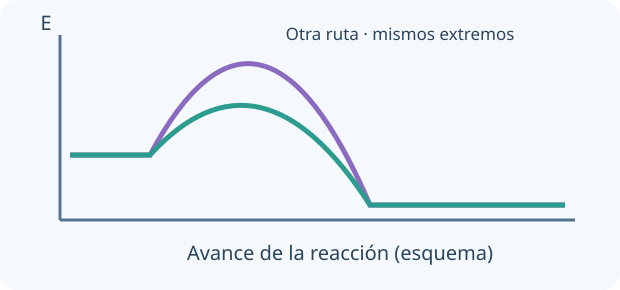

La energía interna y la entalpía describen estados del sistema. Calor y trabajo describen formas de transferencia, no sustancias almacenadas. Para sumar etapas, verificá que sus reactivos y productos intermedios se cancelen y que sus condiciones y cantidades sean compatibles.

El cambio de energía depende de los extremos. Una ruta de menor barrera puede ser más rápida sin cambiar el equilibrio a T fija.
Con la convención química, ΔU = q + w y el trabajo de expansión es w = −PexternaΔV. U y H son funciones de estado: dependen de estados inicial y final; q y w dependen del camino. A presión constante y con solo trabajo PV, qP = ΔH.
La ley de Hess permite sumar reacciones y sus entalpías. Las entalpías estándar de formación se refieren a formar 1 mol de sustancia desde elementos en sus estados de referencia. Un elemento en su estado estándar tiene ΔHf° = 0 por convención, no energía absoluta cero.
ΔrH° = Σν ΔfH°(productos) − Σν ΔfH°(reactivos)
TU TURNO · INTENTÁ RESOLVER ANTES DE MIRAR
Un sistema recibe q = 100 J y realiza 30 J de trabajo sobre el entorno.
Tu desafío: Calculá ΔU usando la convención química de signos para calor y trabajo.
Ver el ejemplo resuelto paso a paso
Con w = −30 J, ΔU = 100 − 30.
ΔU = +70 J. Si recorrés otro camino, q y w pueden cambiar conservando la misma ΔU.
LECCIÓN 2 / 4 · LEÉ, RESOLVÉ Y COMPROBÁ
Predecir espontaneidad con Gibbs
Empezá desde la idea.
Espontáneo significa que una dirección es termodinámicamente favorecida bajo condiciones especificadas, no que ocurra rápidamente. A temperatura y presión constantes, Gibbs combina entalpía y entropía. Siempre distinguí un cambio estándar del cambio bajo la composición real del sistema.
La entropía se relaciona con la cantidad de microestados compatibles con un macroestado; «desorden» es una analogía incompleta. A T y P constantes, ΔG < 0 indica dirección espontánea para la composición considerada. Espontáneo no significa instantáneo.
ΔG = ΔH − TΔS exige unidades compatibles y T absoluta. ΔG° se refiere a estados estándar; en otras composiciones ΔG = ΔG° + RT ln Q. Un proceso con ΔH > 0 y ΔS > 0 puede ser favorable a alta T.
ΔG = ΔH − TΔS · ΔG° = −RT ln K
TU TURNO · INTENTÁ RESOLVER ANTES DE MIRAR
ΔH = +40 kJ/mol y ΔS = +150 J/(mol·K).
Tu desafío: Calculá ΔG a 300 K con unidades compatibles y distinguí favorabilidad de rapidez.
Es favorable bajo esas condiciones; la rapidez requiere estudiar cinética.
LECCIÓN 3 / 4 · LEÉ, RESOLVÉ Y COMPROBÁ
Determinar una ley de velocidad
Empezá desde la idea.
Una ley de velocidad se determina con datos cinéticos. Compara cómo cambia la rapidez cuando varía una concentración y las otras condiciones se controlan. Los exponentes de la ley no se copian automáticamente de los coeficientes de la ecuación global.
La velocidad se obtiene de la variación de concentración normalizada por el coeficiente estequiométrico. Una ley v = k[A]ᵐ[B]ⁿ se determina experimentalmente: no deduzcas exponentes de la ecuación global salvo que se trate de una etapa elemental.
Para orden 0, [A] disminuye linealmente; para primer orden, ln[A] es lineal con t; para segundo orden simple, 1/[A] es lineal. El tiempo de semirreacción de primer orden no depende de [A]₀. Las unidades de k dependen del orden total.
Orden 1: [A]t = [A]₀e⁻ᵏᵗ · t½ = ln 2/k
TU TURNO · INTENTÁ RESOLVER ANTES DE MIRAR
En una cinética de primer orden, k = 0,10 s⁻¹ y [A]₀ = 1,0 M.
Tu desafío: Calculá [A] a 10 s y el tiempo de semirreacción.
Ver el ejemplo resuelto paso a paso
A los 10 s: [A] = e⁻¹ = 0,368 M.
t½ ≈ 6,93 s; tras dos semividas queda 1/4 de la concentración inicial.
LECCIÓN 4 / 4 · LEÉ, RESOLVÉ Y COMPROBÁ
Relacionar barreras y mecanismos
Empezá desde la idea.
Una reacción puede seguir varias etapas microscópicas. Una barrera de activación limita la rapidez de una ruta; un catalizador ofrece otra ruta. No cambia el balance energético global ni el valor de la constante de equilibrio a temperatura fija.
Arrhenius conecta k con T mediante energía de activación. Un catalizador ofrece otro mecanismo y acelera aproximación al equilibrio sin cambiar K ni ΔG° global. El estado de transición está en el máximo de una barrera; un intermediario corresponde a un mínimo local.
Una etapa lenta puede controlar la velocidad, pero su ley debe expresarse en especies medibles. En preequilibrio, una etapa rápida reversible establece una relación de equilibrio; en estado estacionario se aproxima d[intermediario]/dt ≈ 0 tras un período inicial. Son hipótesis distintas que requieren condiciones.
k = Ae^(−Ea/RT) · ln(k₂/k₁) = −Ea/R(1/T₂ − 1/T₁)
TU TURNO · INTENTÁ RESOLVER ANTES DE MIRAR
A + B ⇌ I rápido; I → P lento.
Tu desafío: Deducí la ley de velocidad observable usando la hipótesis de preequilibrio.
Ver el ejemplo resuelto paso a paso
Preequilibrio: [I] = K[A][B].
v = k₂[I] = k₂K[A][B]. El intermediario desaparece de la ley observable.
02
PREDECÍ · INVESTIGÁ · EXPLICÁ
La química en tus manos.
Cargando la mesa de trabajo…
03
LISTO PARA PONER A PRUEBA TU COMPRENSIÓN
Repasá y encontrá qué volver a estudiar.
Ocho preguntas por unidad, con explicación y enlace a la lección correspondiente. Estos resultados se guardan únicamente en este navegador; no se envían al panel docente.